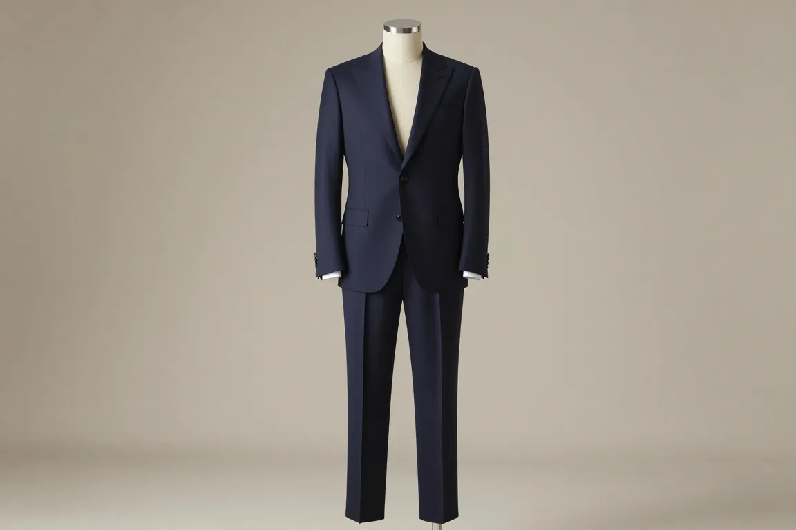

Engelsk skreddersøm
mote · 1800–present · også: Savile Row-skreddersøm, London-snittet, Den engelske draperingen
Snittet til London-skredderen: en enkel, mørk dress i fin kamgarn, tegnet for én kropp og bygget for hånd på hårlerret.

Kjerneidé
En herredress tegnes for én kropp, bygges innvendig med lerret, og vises utvendig med en enkel overflate og en linje uten omstendigheter.
Designprinsipper
- Tegn mønsteret ut fra 20 eller flere mål, og skjær det for hånd fra én lengde stoff.
- Rim en første prøve, så en videre prøve, så en ferdig prøve; regn 50 timer eller mer arbeid til en dress.
- Bygg brystet på et lerret av hestehår og ull, stukket for hånd for å holde rullen i slaget.
- Skjær frakken med et rent bryst og en myk drapering, og en midje som er lett markert.
- Sett ermehodet med en liten rullet eller naturlig kant; sy knapphullene for hånd.
- Velg et mørkt, enkelt stoff på 280 til 400 g per meter: marine, koks, grått.
- Hold buksene høye i livet, med folder, et rett bein og oppbrett.
Antimønstre
- En bokseformet, ferdigsydd blokk uten prøving
- Limt innlegg i brystet
- Høylytt, blankt eller strekkbart dressstoff
- En stram, kort, avkuttet jakke
- Polstrede, firkantede skuldre med en hard kant
- Synlige logoer eller store knapper
Fargepalett
Slektslinje
- Ekko av
- Georgiansk nyklassisistisk manufaktur
- Utviklet til
- Tweed for landlig sport, Ivy-stil, Mod og mini, Power dressing, Stealth-luksustilbehør
- Krysses med
- Engelsk randsydd kjoleko, Punkmote, Stille luksus-mote
- Provoserte
- Americana-arbeidstøy
- Opprør mot
- Rokokko hoffkjole
Bruk den
SKILL.md · tokens.css · kilde-JSON · åpne i demoen